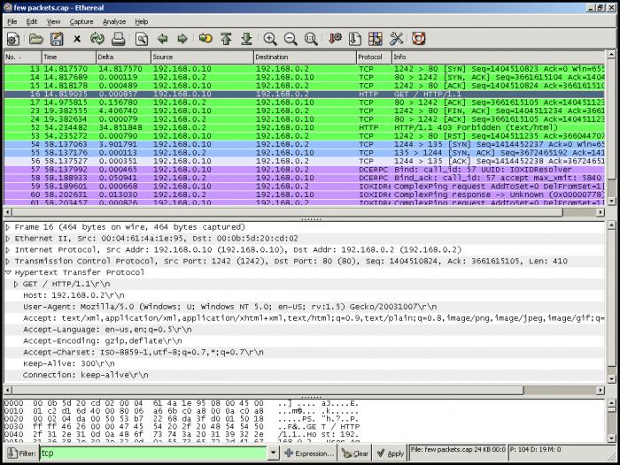

Chapter 14 Safety .net
The Internet sure is a fun place, but unfortunately, there are still some grumpy cats out there looking to take advantage of poor, unsuspecting souls. You've probably heard horror stories of identities being stolen, passwords being compromised, and viruses ravaging innocent computers. In the next few sections, we'll focus on security, which will involve looking not only at threats to your digital world, but also at how you can protect yourself from real-world harm. In general, security refers to protecting your data from prying eyes, which has become a (sadly) essential part of using computers and the Internet.
Sessions
Let's start with a example to motivate the need for security measures. When you log into sites like Gmail or Facebook, you supply them with a username and a password that is unique to you. The idea here is that only you know the password that goes along with your username, so by providing the correct password, you're proving to Google and Facebook that you are who you claim to be, which is called authentication. When we go to an airport or restaurant in real life, we usually authenticate ourself with a driver's license, ID, or passport, which is simply another way of proving that we are who we say we are.
Once you log into a website, that site usually remembers who you are as you navigate to different web pages. If not, then you'd have to log in to see your email inbox, log in again to read a single email, log in again to reply, and so on. Unless you really like typing in your email and password, this isn't the best experience for you as a user. To avoid this problem, websites typically use tiny text files called cookies to remember who you are. When you log into a site, you start a new browsing session that lasts until you log out (or until enough time has passed that the session has expired, which is something determined by the server). Each one of these sessions has a unique identifier, usually generated using some degree of randomness, that the server creates and associates with your web browser. For example, if Alice and Bob are both browsing Facebook, then Alice could have a session ID of 123, and Bob could have a session ID of 456. This session ID is then stored on a cookie on your computer, so somewhere on your hard drive, there's a small text file containing the unique ID for your current browsing session on facebook.com.
Now, when your web browser wants to inform the server who you are, it can send along the unique ID for your current session, which it can retrieve simply by reading the contents of the cookie file. So, if your web browser sends a session ID of 123 to the server, the server can look up the user that is associated with the session ID 123, and then use that information rather than asking you to log in again. Essentially, every time your browser makes an HTTP request, it sends along a little piece of information that reminds the server who you are, which gives us the experience of "staying logged in" as we navigate among different pages on a site. Here's what an HTTP request that includes a session ID could look like:
GET /home.php HTTP/1.1
Host: www.facebook.com
Cookie: PHPSESSID=5153d29ed84c4
Now, we have an HTTP header of Cookie, and our session ID is the string of characters 5153d29ed84c4. The "PHP" part of the cookie likely means that the website is written in a programming language called PHP, but more on that later.
In order for this system to work, each user's session ID has to be unique. If both Alice and Bob have the same session ID, for example, then the server won't be able to tell them apart! So, if Bob logs in after Alice but is assigned the same session ID as Alice, then Alice could suddenly find herself logged in as Bob! If this happened on a bank's website, then Alice would have access to Bob's account information, which could be a pretty bad day for Bob.
HTTPS
Even if the server ensures everyone's session IDs are unique, which will be the case on any correctly-functioning website, we still have a problem: what if Bob is able to guess Alice's session ID? If this happens, then Bob will be able to trick the server into thinking that he's Alice and hijack her session! Typically, session IDs will be a long string of characters, making them hard to guess. But, we just saw that session IDs are transmitted in the clear in HTTP requests. So, if someone on the network is monitoring the network's traffic, then they'll be able to see everyone's session IDs as they're being sent out to various servers. There are plenty of freely available programs that do just this, including Wireshark and TCPDump. The output of Wireshark is shown below. As you can see, anyone on a Wi-Fi network can see all of the packets that are being sent over the network!

So... now what? Seems like we need a way to transmit session IDs to a server, but in a manner that prevents prying eyes from seeing what data is being transferred over the network. Luckily, some smart people have already figured out a solution to this problem, and you may have already used it without ever noticing. When you head to sites like Gmail and Facebook, take a look at the left hand side of your address bar, which probably looks something like this:
Notice that little green padlock to the left of the URL. Padlocks are pretty secure, so Facebook must be a secure site. Google Chrome knows that Facebook must be secure because the URL shown above starts with https, rather than just http. As you might guess, that "s" stands for "secure," and that one little letter actually makes a big difference.
HTTPS is simply another layer of top of HTTP, which if I remember correctly, is the protocol our web browser uses to make requests to web pages and receive responses from web servers. The security comes from combining HTTP with yet another protocol called SSL, or Secure Socket Layer. Now, rather than simply sending your session ID in an HTTP request in a format anyone can read, HTTPS will scramble your data before sending it off to a server. So, if your web browser is using HTTPS, someone monitoring the network would see something that looks more along the lines of:
d2VsbCBhcmVuJ3QgeW91IGNsZXZlcg
That doesn't look much like an HTTP request anymore, does it? While I can't read this (and I hope that you can't either), the recipient web server, which must also be using HTTPS, sure can! Essentially, both the web browser and the web server have agreed on some way of transforming, or encrypting, the plan text of a message into ciphertext, which is an encoding of the message that only the browser and the server can understand. When the server receives this encrypted HTTP request, it knows how to decode, or decrypt, it back into a a readable format. So, when we make a request using HTTPS, our browser first creates an HTTP request just like before, encrypts it so nobody but the server can read it, and then sends it off to the server. Now, if anyone intercepts the data before it gets to the server, they won't have any idea what it says, so we're safe! Ha ha ha, take that, Bob. When the server receives the message, it decrypts it back into a readable HTTP request and then responds just as it did before. We can see then, than the S hasn't fundamentally changed how HTTP works, it's just another layer to make it more secure!
Because both the client and the server have to be on the same page with the encryption process, HTTPS is something that must be enabled on a web server. So, we can't simply type https into any old URL to make it secure; HTTPS must be supported on the server we're talking to. Luckily, this is the case on most servers using authentication nowadays.
Wi-Fi Security
HTTPS isn't the only way to encrypt traffic on a network. If you've ever set up a wireless network, you've probably seen options to encrypt all of the traffic that goes over the network, which may have included WEP, WPA, and WPA2. Each of these acronyms is just another way of encrypting information before we send it over a network. We saw how your web browser can encrypt HTTP traffic if it's talking to a server that supports HTTPS, but not all servers support HTTPS. So, someone using Wireshark to look at all of the traffic over your Wi-Fi network will still be able to read those HTTP requests. A solution, then, is to simply encrypt everything that is sent over the wireless network rather than only rely on the web browser to encrypt HTTP requests! To do so, we'll need some kind of secret key, usually just a password, that your wireless router will use to encrypt information. Without that password, anyone looking at the network traffic won't have any idea what it says. Once you join the network by supplying the correct password, you'll be able to see all of the decrypted traffic, so if an attacker cracks your Wi-Fi password, then you're in trouble.
However, some methods for encrypting Wi-Fi traffic are better than others. WEP, for example, has actually been cracked, which means that an attacker can figure out how to decrypt messages sent over the network. So, it's not really that secure. Instead, WPA2 (which is just a newer version of WPA) is a much better way to protect your wireless network. Finally, encrypting your Wi-Fi network doesn't mean that you don't need to use HTTPS anymore, since there's always the risk that a clever attacker will figure out your network's password. Instead, think of Wi-Fi encryption as another layer of security that can work in tandem with HTTPS to protect your data.
CSRF
Now, let's shift gears a bit and look at three different attacks that can occur online. The first of these, called CSRF, or Cross-Site Request Forgery, is an attack that exploits the idea of sessions that we saw a bit earlier. CSRF attacks take advantage of the fact that your session with a website doesn't end when you navigate to a different URL. For example, if you're procrastinating work like me, you might log into Facebook, check your Gmail, read some news, and then come back to Facebook. However, you don't need to log in to Facebook again when you come back the second time, which means that your session with Facebook is still active. Instead, your session might expire after a day, a week, or a month or so, depending on how long Facebook decided your sessions should be. Clicking "log out" will also destroy your session, requiring you to log in again.
Let's say that you do all of your online banking with bank.com. When you log into bank.com, you see that trusty green padlock in the left of your address bar, so it must be secure, right? You want to transfer some money from your checking account into your savings account, and you notice that the URL in your address bar looks something like this after you press the "transfer" button:
https://bank.com/money/transfer?to=67890&amount=100
Using your newfound knowledge of URLs, it looks like this URL is telling a bank.com server to transfer $100 to account #67890, which happens to be your savings account. That URL doesn't need to include the account number the money is coming from, since the server assumes that the account you're currently logged into is the source of the funds.
Unfortunately, some malicious users also use bank.com, and they also notice that this is the URL used to make transfers. Let's say that one of those malicious users, the pround owner of account #12345, owns the domain vank.com, which you might accidentally type into the address bar in an attempt to spell bank.com. The devlishly clever owner of vank.com now embeds the following URL on his page:
https://bank.com/money/transfer?to=12345&amount=100
Now, if I visit vank.com while I'm already logged into bank.com, $100 is going to be transferred from my account into the attacker's account! Great bouncing icebergs, what a mean trick! The attacker has taken advantage of the fact that we can put whatever parameters we want into bank.com's transfer URL, and the server will blindly transfer money from the account of the currently logged in user. We would never actually want to transfer money into such a villainous account, but because we're indeed logged in to bank.com already, the server might assume that we indeed want to make the transfer.
Luckily, sites can implement a pretty simple solution to this problem, so hopefully, your bank isn't vulnerable to CSRF attacks. One way to prevent CSRF attacks is to include a big random value on every page on the site. So, when you visit bank.com's money transfer page, the server will generate a random token like 8549ba93417cdef85 and associate it with your current session. Now, when you go to transfer money, the URL might look something like:
https://bank.com/money/transfer?to=67890&amount=100&token=8549ba93417cdef85
Now, bank.com won't let a transfer go through unless the URL includes the correct token that was generated by the server! Since the attackers at vank.com have no way to figure out the value of my token at bank.com, their trick won't work anymore, and my money will live to see another day. Sure enough, if we visit the website for a real bank, like bankofamerica.com, we can see that a CSRF token is indeed included on all of their forms via a tiny line that looks like this:
<input type="hidden" name="csrfTokenHidden" value="12345" id="csrfTokenHidden">
XSS
CSRF attacks exploit how information is handled on the server, so let's take a look at an attack that targets clients instead. XSS, which stands for Cross-Site Scripting (get it? It's like X-Mas, ho ho ho), takes advantage of your computer's web browser. We'll see in just a bit how websites use HTML to display information, but XSS attacks work by injecting HTML or other code into a website. For example, we saw earlier that the HTML <h1>E1</h1> would create a heading that says "E1". So, what if I chose <h1>Tommy</h1> as my username for a website? Potentially, "Tommy" would be displayed on the page as a large heading, since my username contained some HTML that the site displayed without thinking twice! That's not really the end of the world, but what if my username is a piece of HTML that makes all of the text on the page pink Comic Sans on a glitter background? Now, any page that displays my username is going to look different for everyone who visits the page! Pink Comic Sans text on a glitter background would be pretty devastating for Facebook's reputation if you ask me.
Of course, we can do much more damage by injecting code onto a web page via XSS. Let's come back to the idea of session hijacking, where we tricked a server into thinking we're someone else by figuring out their unique session ID. Using XSS, we can steal a user's session ID on a web page, which would allow us to impersonate them. How evil! We know that session IDs are stored in cookies, which are just tiny files on your computer, and it just so happens that we can access those cookies via the web browser. So, if an attacker owns a website like badguy.com, they can place a tiny piece of code onto a poor, unsuspecting website that sends every user's session ID to badguy.com! Because this code will be run on the client, rather than the server, the attacker will be able to access the files that are stored locally on each user's computer.
Databases
Now, let's talk a bit of how a website might keep track of information. Dynamic websites like Facebook and Gmail store information associated with your account in something called a database. A database consists of multiple tables, where a table has columns that define what types of information the table will store, and rows in the table define values for those types. For example, let's say we own a pet store, and we want to keep track of all of the cats, dogs, and other animals in the store. So, we'll create a database for the pet store, and for now, we'll create a table for cats and a table for dogs. In our cats table, we might want to keep track of each cat's name, date of birth, color, and indoor/outdoor preference. In our dogs table, on the other hand, we might want to keep track of each dog's name, date of birth, breed, and preferred chew toy. Now, we might have some entries in our table that look like this:
Cats
| Name | DOB | Color | Preference |
|---|---|---|---|
| Shocked Cat | 2010-03-17 | white | indoor |
| Grumpy Cat | 2012-04-04 | white | indoor |
| Keyboard Cat | 1984-01-01 | orange | outdoor |
Dogs
| Name | DOB | Breed | Chew Toy |
|---|---|---|---|
| Pluto | 1930-09-05 | English Pointer | Bone |
| Lassie | 1943-10-07 | Collie | Rubber |
Great, now we have a database with a few tables and rows in those tables. So, how does a website access information from a database? One popular way of doing so is to use something called SQL, or Structured Query Language. Popular database management systems that use SQL include MySQL, Oracle, and PostgreSQL. As its name suggests, SQL allows us to ask questions about the database in the form of text-based queries. For example, we might want to say "What are the names of the cats in the cats table?" If we're using MySQL, which is simply a piece of software we can download for free, for our database, then this query might look like:
SELECT name FROM cats
The structure of this query is dictated by the MySQL standard, much like the format of an HTTP was dictated by the HTTP specification. Let's break this down a bit. First, we have the word SELECT, which tells the database what you would like to do: select some information. Next, we have a list of all of the columns we'd like to retrieve. Since we just want the names of our cats, we can just say name, which is the name of a column in the table. Finally, we have the word FROM followed by the name of the table we'd like to retrieve information from. The database will then evaluate this query and give us back an answer like:
| Name |
|---|
| Shocked Cat |
| Grumpy Cat |
| Keyboard Cat |
And there we go, we just used SQL to get some information about our database! Now, let's say we want to get all of the information about all of our indoor cats. To do so, we might use a query like:
SELECT * FROM cats WHERE preference = 'indoor'
This looks a bit like our query from last time, but it has a few differences. First, notice how we're SELECTing * to get all of the information in the table rather than simply name. We could write out all of the columns in our database here, but the * is simply a shortcut for "every column." At the end of our query, we're now limiting the results that we get back to indoor cats only. If we have a customer who's looking to buy an indoor cat, then there's no need to display all of the cats in the store, since they're only interested in a specific type of cat. For this query, our result set will look like this:
| Name | DOB | Color | Preference |
|---|---|---|---|
| Shocked Cat | 2010-03-17 | white | indoor |
| Grumpy Cat | 2012-04-04 | white | indoor |
Cool beans, now we know how we can use SQL to retrieve information from a database, but how did those rows get there in the first place? Using SQL, we can also insert new rows into a table. A query to add a new cat to the cats table might look something like:
INSERT INTO cats (name, dob, color, preference) VALUES ('Maru', '2008-06-01', 'gray', 'indoor')
Alrighty, looks a bit more complicated, but let's go through this. Just like last time, we first need to tell the database what we'd like to do, and in this query, we want to insert some new information. Next, we have INTO cats, which tells the database which table we'd like to add rows to. Then, we have a comma-separated list of columns; these are the columns that our new row will provide values for. As an aside, this list doesn't have to include every column in the table. After the list of columns, we have the word VALUES followed by another comma-separated list. This list, as you might guess, tells the database what the values for our new row are. The order for these values is the same as the order of the columns in the previous list, so we're providing a name of "Maru," a color of "gray," and so on. After we run this query, our cats table will have a new row, so it will look like this:
What about editing existing rows in our tables? To do that, we can write a SQL statement that specifies which rows we want to change as well as what to change those rows to:
UPDATE cats SET preference = 'outdoor' WHERE name = 'Maru'
Okay, just like last time, the first part of this query is telling the database what we want to do. Then, we have the table we want to modify. Next, we have the name of a column in the table followed by a new value for that column. The last part of the query re-uses the same WHERE construction that we saw earlier with our SELECT query. Now, rather than making every cat in the table an outdoor cat, this query will only modify those rows where the value of the name column is Maru. So, this query might affect one row or multiple rows, depending on how many cats named Maru we have!
Finally, we can use SQL to delete rows in the database. If we sell our good friend Maru to a new, happy home, then we can run the following SQL query to remove him from the database:
DELETE FROM cats WHERE name = 'Maru'
Here, we'd like to DELETE a row FROM our cats table. If we were to simply run a query that said DELETE FROM cats, we'd end up deleting every row from the cats table, which wouldn't be so good. Instead, we only want to delete a single row, so we'd like to limit our query to only those rows WHERE the value of the name column is Maru.
Phew! That was a whirlwind tour of the basics of SQL. To recap, we looked at four basic things we can do with the information in a database: create, read, update, and delete. The elegant acronym CRUD is commonly used to describe these four basic operations, but unfortunately, not all of the SQL verbs we saw don't quite line up with these words. To create information we used INSERT, to read information we used SELECT, to update information we used UPDATE, and to delete information we used DELETE. SQL is capable of more powerful queries, but for now, let's take a look at how databases and SQL affect your online security.
Injection
In the examples above, we wrote out all of the queries by hand, but on a dynamic website like Facebook, the queries probably contain values that are set by users. For example, when you head to someone's Facebook profile page, the SQL query that is executed might look something like:
SELECT * FROM profiles WHERE username = 'zuck'
While the cats we saw earlier presumably didn't choose their own names, most sites allow users to choose their own usernames. So, the value in the WHERE clause in the above query is something that was chosen by a user, which can be potentially dangerous. Let's step back from SQL for just a moment to explain a potential security vulnerability that arises when you allow other users to dictate what queries look like. At Tommy's Grille, customers can order whatever they want by filling out a form that looks like the below and giving it to the chef:
I would like cheeseburgers cooked and topped with .
Normal customers might submit something that looks like this:
I would like 2 cheeseburgers cooked medium-well and topped with lettuce, pickles, and mayo .
And they will be rewarded with delicious cheeseburgers cooked to perfection. However, notice how we haven't provided customers with a checklist of cooking temperatures or toppings; we're allowing them to write in whatever they want. We aim to please at Tommy's Grille, so we want to be as flexible as possible with what we allow our customers to order. However, that means that there's nothing stopping a customer from submitting an order form that looks like this:
I would like 2 cheeseburgers cooked medium-well and then thrown at the nearest customer's head. I don't care about the toppings, so you can stop reading this now and topped with lettuce, pickles, and mayo .
Dang, despite our best intentions, it looks like we've been taken advantage of. Since we let customers write whatever they wanted into the order form, we've exposed ourselves to a vulnerability. If we just blindly do whatever the customer writes, then we could end up doing something malicious if a customer is as devlishly clever as this one. This type of attack is called an injection, because someone has injected some malicious instructions into an otherwise harmless cheeseburger order form.
Let's try to use an injection in the context of SQL now. If we let users choose their username, then whatever they pick will fill in the blank in the following SQL query, which might be designed to grab their profile information:
SELECT * FROM profiles WHERE username = '_____'
Notice how we've been enclosing the value in the WHERE clause in quotes. What happens, then, if someone were to put a quote in their username? For example, I'd like to choose the username ' OR '1' = '1. Seems like a strange thing to want as a username, right? But, let's fill in the blank with exactly this value.
SELECT * FROM profiles WHERE username = '' OR '1' = '1'
Uh oh. After we plugged in my username into the blank, we ended up with a completely different SQL query! What results will this give us? Well, it seems like a pretty safe bet that 1 = 1 for the forseeable future, and if at some point we discover that 1 is not equal to 1, then we have bigger problems on our hands that we should be worrying about. Because 1 = 1, the WHERE clause in this query is going to be true for every single row in the table, so this query is simply going to return the entire table. In the context of Facebook, that means I'd be able to view anyone's profile information, regardless of their privacy settings.
Let's consider an even worse scenario. Here's some SQL that could be used in a website's login process:
SELECT * FROM users WHERE username = '_____' AND password = '_____'
If this query returns any row, that must mean that the user supplied a valid username and password pair, so we can go ahead and log them in as that user. Now, I'm going to log in with the username rj and the password password ' OR '1' = '1. Let's plug those in:
SELECT * FROM users WHERE username = 'rj' AND password = '' OR '1' = '1'
Holy haberdashery, Batman! Once we plugged in my password into the query, we again ended up with a different SQL query than the one we originally meant to execute. What's going to happen this time? We're going to get all rows that satisfy at least one of two conditions: either the username is rj and the password is blank, or '1' = '1'. So, once again, we're going to get every single row back! Potentially then, the site could allow us to log in as the user rj, or we could end up logging in as another user in the database. Exactly what happens depends on how the site works underneath the hood, but neither of these outcomes sounds like good news to me.
So that was pretty bad, but what if I want to have the username '; DELETE FROM profiles; --'? That's a username that really rolls off the tongue, isn't i? Let's plug it in again and see what happens:
SELECT * FROM profiles WHERE username = ''; DELETE FROM profiles; --'
Ouch. We saw earlier that DELETE FROM profiles is a SQL query that will delete all the rows in a table called profiles. It turns out that SQL allows us to express more than one query at a time if we separate them with semicolons. So, the above statement is actually a few queries packed into one. First, the database will find all rows where the username is blank, which probably returns nothing. We don't really care about that, but once we move on to the next query, ka-boom. The last bit of my username, --, is just a way of stopping anything else from executing in that above example, since we ended up with a stray quote at the end of our query.
Database Security
As we've seen, we can do a lot of damage with SQL injection. Seems like this is something that we'd obviousl want to prevent in the real world. The primary way to do so is to sanitize all of the database inputs. All of the injections we saw involved some trickery with the single quote character, so one natural first step to take is to prevent users from entering a quote into the query. So, we can simply replace, or escape, the single quote character with something else, so users can't directly manipulate the SQL query. For example, an escaped version of a SQL query might look something like this:
SELECT * FROM profiles WHERE username = '\' OR \'1\' = \'1'
Here, we're using a backslash to escape the quotes. So, whenever we see a \, we'll treat the character that comes directly afterwards a bit differently. Now that we've escaped the input, this query will actually look for a user with the username ' OR '1' = '1, where the unescaped version would wreak havoc on our poor website.
Many database systems also allow you to restrict what queries can do. For example, we can essentially say "execute this query, but don't let it change any values in the database." Now, whatever the query is, our database will prevent it from actually making any changes. Before, we were able to inject a DELETE query into what started off as a SELECT query; by enforcing some permissions on the query, this won't work. Besides, if we know that we're going to perform a query that will simply get a user's profile information, there's no reason for that query to be modifying the database at all, so this kind of protection makes sense. Database security (and security in general) is serious business, so it's always best to take as many preventative measures as we possibly can, even if we think we're safe from harm!
Practice Problems
As an avid Twitter user, it would be devastating for me to have to log in every time I wanted to share another 140 characters of wisdom with the world. How is it that Twitter is able to remember who I am as I go on my tweeting rampage? Be specific as to exactly where information is stored as well as what is exchanged between my web browser and a server.
Why might a server want to expire its session cookies after some amount of time?
How is HTTPS different from HTTP? Why does the "S" in HTTPS make sites more secure?
You and a friend are both using the same wireless network to browse the web. The network is encrypted using WPA2. Is it possible for you to see the network traffic generated by your friend? Why or why not?
You're running for class president at your high school, and your school has set up an online voting system. After logging in via your school's secure authentication system, students are taken to a form where they can select a candidate to vote for. You notice that after voting (for yourself of course), you were taken to the URL
http://school.edu/vote?for=you. The next day, you find out that someone else has won the election by a landslide, but you suspect foul play is afoot. How could your opponent have taken advantage of the system? Propose a solution that would have thwarted your opponent's villainy.What's the difference between CSRF and XSS? How are XSS and session hijacking related?
What is a SQL injection attack? What kind of damage might an attacker be able to incur via a SQL injection? How can we prevent SQL injections?
What's so funny about the below?